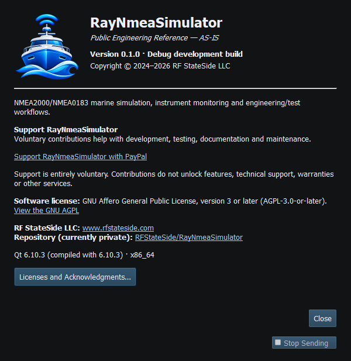

RayNmeaSimulator is published by RF StateSide LLC under the GNU Affero General Public License, version 3 or later (AGPL-3.0-or-later). The About dialog provides application identity, license and acknowledgments. Read the actual license when copying, modifying or distributing the software.
Qt, SDL2, NMEA2000/NMEA0183 and other incorporated components retain their license notices and acknowledgments. Find them through About and the notices included with the application.
Support RayNmeaSimulator is available in About and the Help menu. It opens the approved external PayPal destination in the default browser. Contributions are entirely voluntary and confer no premium features, technical support, warranty or other service. The application contains no payment processing, subscription or account workflow.
The software is supplied under its license terms, including the applicable warranty and liability provisions. Read the license and included third-party notices before redistributing the application.

Figure 107. About RayNmeaSimulator shows the version, publisher, license and acknowledgments. Click to enlarge.
Engineering Units · NMEA PGNs and Sentences · Security and Privacy · Using RayNmeaSimulator Safely · Connection Troubleshooting · Enable, Dispatch and Sending · Route Overview